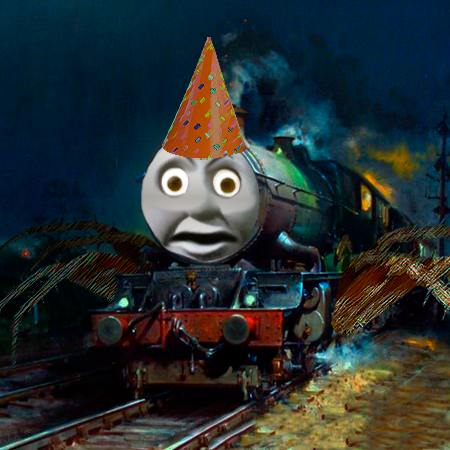

Spidertrain

- Vægt: 600 tons
- Højde / længde: 40m
- Alder / Levetid: Mindst 152 år
- Kost: Dine håb og drømme
- Univers / Lokation: Ålandet
Beskrivelse
Spidertrain, også kendt som "spoidertren" er et tog af ukendt oprindelse. Det ses oftest kørende på de gamle jernbaner, primært i ålandet.
Spidertrain blev set for første gang den 27. februar 1869.